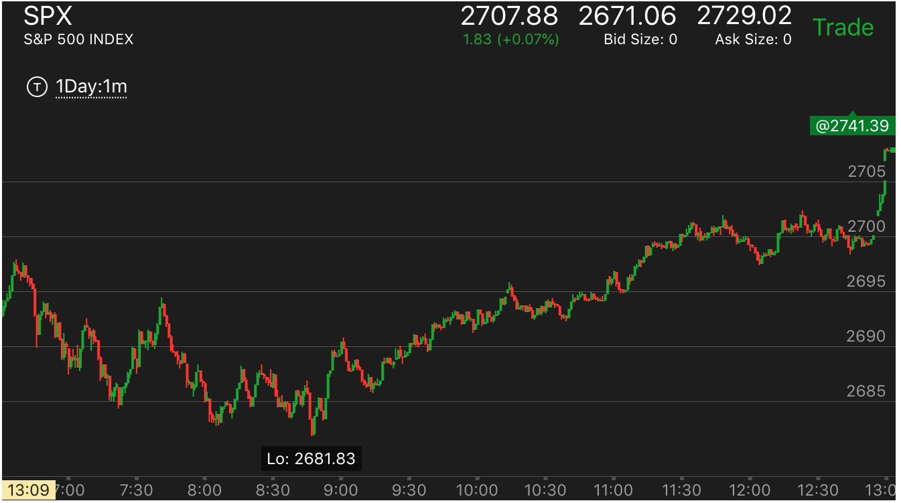
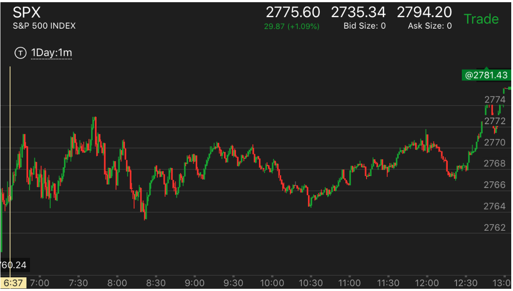
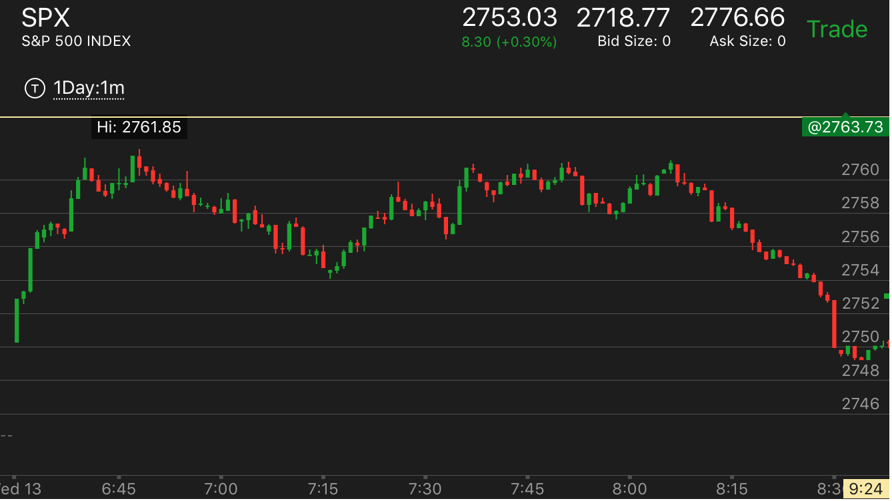

两段走势的分析
两段走势的分析
TOP
上涨的形状决定它的未来
全天分析的例子
正向两段走势很快，反向的两段走势速度很慢
两段走势的转折
正向两段走势很快，反向的两段走势速度很慢
TOP
这个走势经常发生，一个速度很快，而反转后，速度很慢。这时一定要坚持。它一定会跌破前面的走势的低点的或者
涨破前面的高点。不要轻易平仓。

图示：
7：30开始的两段上涨走势，速度很快。结束后，它的反向走势速度很慢。但是不要被它迷惑，
这样的走势反而是跌的更加厉害的走势。也不要被它的很快的反弹所迷惑。要想到这样的走势如果要反弹，一定是非常的慢的，如果很快
说明不对。还会继续下跌的。
9：55开始的反弹，它在底部停留时间很短，只有几分钟，就开始反弹了。反弹的时候，速度很快。这样不会持久的。要想到，前面这样的一个大的主要走势。
一定要有根基才能真的反弹，不然就是为了继续下跌而准备的。10：40的反弹也是如此，在底部停留时间太短，而反弹的速度太快了。
两段走势的转折
TOP
1. 大幅运动后，回调或者缓慢运动，再次大幅运动。这样就转折了
2. 每次运动后，回调，在某个时候，没有回调，而继续上涨，这样就是顶部了。
3. 回调很大，在回调结束的以后，再次运动过程中，出现了运动没有回调的场景。这样在超过回调点后，也可以算作是到头了。

图示：不算开盘的话，第一段走势8：30开始上涨，回调后，10：30再次大幅上涨。这样就到达了顶部而开始下跌。

图示：9：15开始的上涨，没有回调，就继续上涨了。这个其实是个5浪上涨，然后就开始大跌了。虽然它上涨幅度不大，
但是这个走势本身就是到头了。

图示：
1. 8：00大幅回调后，它一口气冲高过了前面的高点。但是绝对幅度不大，只比前面的高点高一点点。它中间也没有停顿。这样就不是到头的标志。
2. 11：20开始冲高后，它冲高的时候没有回调，就不断上涨，它一定会超过前面的高点，然后开始走低，两段走势转折了。

图示：
1. 8：15出现了双峰走势，一个峰更高，但是注意观察，它第二个峰的下跌速度很快。要低于第一个峰。这样就不是顶部的表示。说明没有到头。
正确的方式是，第一个快速回调，第二个很慢回调。这样才是正确的下跌方式。
走势的开始一直缓慢运动，然后快速下跌，这样才是第一浪，然后反弹后，再次下跌，才是第二浪

图示：
1. 它的启动走势一直很缓慢，用了一个多小时，才开始下跌。直到8：20才开始正式下跌。前面速度很快。不能算真空的一部分，
一直跌倒8：50才是第一浪，反弹后，再次下跌，这是第二浪。开始反弹了。
全天分析的例子
TOP
1. 一个走势，总是分为两个阶段的。但是这两个阶段。时间长短不一定，幅度大小也不一定。
第二个阶段是否一定结束也不一定，可能持续到收盘才爆发结束。所以一定要仔细分析。
2. 两段走势，要么时间成比例。要么幅度上成比例。如果幅度或者时间太小。只能算后面的一部分。那么还有第二部分。
3. 一个走势反转后，如果反向走势幅度很小。那么它是无法反转更大的走势的。只是让更大的走势暂时回调一下。
比如前面大跌，两段结束，开始上涨。上涨幅度很小。就出现两段走势，开始下跌。那么仍然处于升势。但是暂时
处于跌势。它可能出现双底，或者在比原来的低点更高的地方就开始走出两段下跌而反转了。
4. 如果不容易判断两段走势到底是那一段，可以用速度来判断，一般第一段和第二段的连接的地方是快速回调。速度快。
但是总的幅度不大
5. 如果看到第二浪没有到头就大幅回调，很可能第二浪已经到头了。这时应该观察，不要觉得第二浪没有到头而去捞底或顶。
6. 判断走势的跌幅或者涨幅，可以根据真空的填补来判断。
7. 判断一个两段走势的幅度，可以用它的反向走势的速度来判断。一般一个速度很快，另外一个速度就很慢。很慢的走势，
一般会跌破或者涨破前面的低点或者高点
一个主要走势是跌势，如果下跌后，反弹的幅度到了和原来差不多。或者只低两个点的地方，而且停留很久，
说明它的升势太大了。不能算是跌势的一部分。如果它反弹幅度明显很低，那么再次下跌就是两段走势的第二段。
两段走势的第二段或者第一段如果是缓慢运动走势，那么不能算两段走势，不会反转

图示：
1. 一开盘下跌，大盘处于跌势。但是当天的跌势不是很强。到了7：40，它大幅冲高，然后飞快下跌，
创新低。但是跌势仍然没有结束，它稍微反弹后，反弹幅度不大
在8：50快速下跌，创新低。这样跌势以一个惊心动魄的方式结束了。这样的大跌，会让人直觉上看跌。结果跌势结束了。
2. 结束后，冲高，但是幅度很小，而且很快就拉回了。
8：40创新低，立刻回来，形成一个双底。这样就开始了升势。升势的第一阶段，快速大涨。9：00开始回调.9：15回调结束。开始第二阶段。
然而这个第二阶段，非常的慢，中间经历了长时间震荡，回调关键点，不断拉回后创新高的样子，所以一直没有结束。直到收盘前，大涨。

图示：
1. 开盘后不断上涨，然后回调，7：20出现满幅度上涨。冲高回落，上涨结束
2. 7:45开始下跌，7：50第一浪下跌。反弹后，8：20第二浪下跌。
3. 8：20开始第一浪上涨，徘徊后，9：10开始第二浪上涨；在顶部出现横向5浪走势。开始下跌。
4. 下跌的时候，先是跌。10：00出现大跌，然后走平很久，再次下跌。形成走平下跌的底部。
跌势结束。
5. 10:30开始上涨。这是第一浪；12：00开始回调，可以看到12：00的回调速度很快，很快就从最高点
下来了。其实总的幅度不大。这时可以断定这个是第一浪结束的回调。最后一定冲刺。

图示：
1.开盘后出现跌势，下跌。但是没有任何激烈的情况，就开始反弹了。7：15开始反弹。它很快反弹到了最高点。似乎要大涨。但是要看到几个问题。
它一直无法突破这个点。
2. 它前面下跌后，反弹前，大盘很平淡。没有加速的状态
3. 其实就是有加速状态，这个只是第一波下跌，跌势没有结束。不要它纷乱的走势所迷惑，看起来大盘很强，但是其实是要跌的。

图示：开盘出现缓慢上升走势，那么就不是第一段上涨。7：45开始大涨，不能把这个大涨看作是上涨的结束。
其实它才刚刚开始上涨。

图示：
1. 一开始确定是跌势。它7：30下跌后，反弹，幅度很大，到了2712.接近前面的高点。说明还要下跌。下跌没有结束。
2. 8：10创新低后，再次反弹，它一开始反弹很大，但是回调也很大，这样不算大涨结束，到了9：00.它再次上涨到了2712，这样才是第二段
上涨，而且它涨幅接近前面的高点。说明上涨结束了。
3. 10：40开始再次下跌，反弹。这次反弹幅度明显比原来小。11：20冲高后，在高点停留很短时间，就立刻拉回。
这样不会就不是冲高了。到了11：40它大跌，创新低。这个就是两段下跌的第二段。加上它前面反弹不大。说明这个和前一个下跌是一部分。
这样就大盘就反转了。进入升势。
图示：
1. 开盘后，缓慢冲高，7：30回调。这个回调比较特别，它在低点没有停留，立刻反弹。后面也再也没有回来。而是依赖不断的拉回而走高。
2. 8：20的走势，要非常注意。它冲高后，稍微走低一点，然后走平。走平后，迅速大跌。反弹后，可以看到它反弹的幅度比下跌的幅度要小。
这一个就是示弱的走势。反而表示未来会冲破这个点。果然8：35， 它突破后大涨。
3. 9：00冲高后，立刻下来，然后长时间走平。这说明它不是顶部。但是它又真空。需要填补。它再10：30填补真空后，开始大涨。这个涨势
比较具有欺骗性。它看起来非常的缓慢。但是其实并不慢。它本身就是一个加速了。只要它见顶了。就是第二段升势了。这个时候，只能做空，不能做多。
而且它下跌的时候，至少要把真空填补了。这个真空再2779附近。所以至少也得跌倒那里。

图示：
1. 开盘后，处于升势，7：00开始第一波上涨，回调后，开始第二波上涨。第二波上涨很快加速到达顶部。
开始了跌势。
2. 跌势的第一波大跌，一下子就跌倒了2705.从7：50到8：10都在休息。其实是缓慢下跌。然后8：20加速下跌。跌势结束。开始升势。
3. 9：30开始升势。结果是个两段上涨走势，然后双顶。升势结束。但是这个升势要特别注意，它和前面的跌势的跌幅不成比例，所以
它本身是无法反前面的跌势的。也就是说，它可以把小的走势从升势反成跌势，但是更大的走势仍然是升势。它的涨幅很小。
所以无法撼动前面的跌势反转。
4. 9：40开始下跌，两段下跌。和前面形成双底。跌势结束。
5. 9：55开始升势，第一浪速度很快10：20回调后，开始第二浪，10：40结束，升势结束，开始跌势。
6. 11：20，出现两段下跌走势，反弹跨越两段下跌，形成升势，第一浪很大，然后回调，中间一直在震荡，没有第二浪。可以看到它不断
从高点拉回，一直到了收盘前，走低，走平，大涨。也就是第二浪一直没有结束，留在收盘爆发。

图示：7：20开始上涨，7：25回调，这个是第一段。然后一路上涨。
这个是第二段。8：05稍微回调后，加速大涨，实际没有涨很多。然后缓慢的走低，这个就是顶部了。走势结束。
开始下跌。

图示：
1. 7：00开始上涨，7：05大涨后，回调，这个是第一段。然后继续大涨。
到了7：20它冲高走平，这个就是第二段了。上涨结束，开始下跌。
2. 下跌的时候，7：30是第一段。它先是快速下跌，好像一个回调的样子，然后用冲高走平的方法反弹，然后再次下跌。
再次下跌后，就是第二段下跌了。它虽然下跌幅度不大，但是回调的时间也够长。所以应该算第一段下跌。后面大跌后，
就是第二段。一旦停止，就是反转了。

图示：这个走势和上一个相似。但是有本质的区别。7：30到达顶部后，它缓慢下跌，
这个只能算头部的一部分。7：40一个大跌，但是其实跌幅不大，然后稍微反弹4分钟，继续大跌。这个算第一次下跌，而不是第二次。
和上面不同。因为它的反弹时间很短。和后面的下跌比起来不成比例。

图示：8：30开始的大涨，已经是第二段上涨。如果加速见到顶部，就应该到头了。9：30分它连续大涨。
但是注意观察。它到了高点，立刻下来，没有走平。它在下跌前，没有大幅冲高。它是先大幅冲高，然后连续几个慢速度上涨。所以不是
见顶的走势。这个时候，应该放弃不做，注意观察。它可能最后冲高，也可能中间冲高后，大跌。
直到12：00它加速大涨，才算冲高到头了。第二段走势结束，然后大跌。

图示：开盘上涨，7：10是第一段。震荡后，从7：40开始第二段。8：40在底部短暂停留后，没有填补真空就快速上涨。
到达了顶部。9：00开始第一段下跌，9：40开始第二段下跌。10：10反弹，到10：40是第二段结束。11：00开始第二段上涨。结束。
11：10开始第一段下跌。11：30开始第二段下跌。大概在11：45结束。12：00开始上涨，第一浪在12：20结束。最后10分钟冲刺。
第一段走势回调的时候，上涨的形状决定它的涨幅
TOP

图示：6：50开始回调，7：15开始上涨。可以看到，它的第一浪就
到了前面的高点，然后走平震荡，这个说明它的上涨乏力。后来它果然在7：40上冲后，立刻下来。
上涨结束了。

图示：12:00出现顶部，很快下来，和前面的上涨速度相比很快。
12：15走平，然后反弹，只反弹了一点，就开始走平。这样说明很强，会大涨。另外，12：00，出现
创高点后，立刻拉回，说明未来一定会超过这个点的。加上快收盘了，可以买期权来扩大收益。

图示：7:15开始回调，7：40到底后，立刻反弹，但是不要着急。它反弹后，不断回撤，8：15
出现了稍微下跌后，走平的走势。这个会大跌。它下跌后，8：30反弹，然后走平。可以观察到，它反弹的幅度低于前面下跌的幅度。
这说明要大涨。